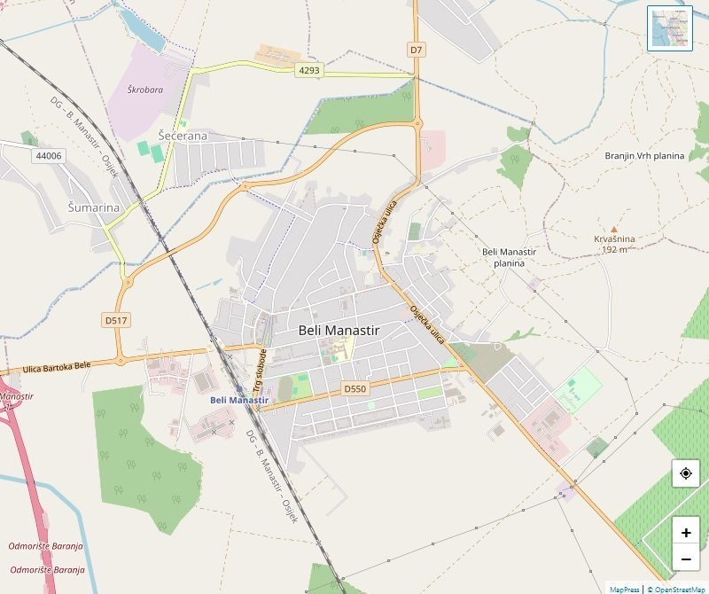

Položaj Belog Manastira
Beli Manastir nalazi se u Baranji, na istoku Hrvatske. Baranja je smještena između Drave i Dunava. Beli Manastir najveći je grad ovog područja.

Ratna zbivanja
Tijekom 1991. godine Baranja je okupirana i Beli Manastir našao se izvan kontrole hrvatskih vlasti. Mnogi stanovnici morali su napustiti svoje domove. Rat je ostavio velike posljedice na stanovništvo.
Vremenska crta
-
1991.
Početak Domovinskog rata i okupacija Baranje. -
1991. – 1995.
Beli Manastir nalazi se na okupiranom području. -
1996.
Počinje mirna reintegracija hrvatskog Podunavlja. -
15. 1. 1998.
Završetak mirne reintegracije.
Mirna reintegracija
Baranja je vraćena u sastav Republike Hrvatske mirnim putem. Proces mirne reintegracije trajao je od 1996. do 15. siječnja 1998. godine.
Beli Manastir danas
Danas je Beli Manastir dio Osječko-baranjske županije. Grad se nakon rata obnavljao i nastavio razvijati. Sjećanje na rat dio je njegove povijesti.
Zaključak
Domovinski rat ostavio je velike posljedice na Beli Manastir i njegove stanovnike. Važno je poznavati povijest svoga kraja i čuvati sjećanje na te događaje.